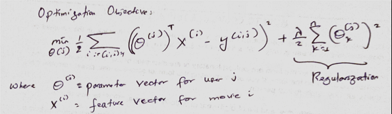

Building a reccomendation system
Introduction
Recommendation systems have become an integral products in most industries. It provides a way for companies to better interact with their clients by pushing personalized content to their clients, especially now that machine learning is being used to better predict user's preferences. In this blog, I will try to explain how to build a movie recommendation system that makes use of a combination of content based filtering and collaborative-based filtering.
Data collection and processing
Data used for this project was primarily collected by GroupLens research from the Movielens website. The dataset consists of information on IMDB movies, their ratings, and the users who rated the movies. This information was enough to create a machine learning model that learns users’ preferences as well features for each movie. There were two groups of datasets used for this dataset: a large dataset and a small dataset. For computational reasons, the large dataset was split into two separate groups with each one being split by a 7:10 ratio to be used for training and the remaining one fourth of the dataset used for testing split into test and development set by a 1:2 ratio.
Model selection and Feature selection
A feature vector, X, for movie of dimension n represents how much of the movie belongs to the nth genre. For example, if we’re creating a feature vector of size 3, first entry might provide information about how comedic the movie was, the second might provide information about how romantic the movie is and so forth. This feature vector, X, along with the users’ preference of genere, Theta, will be learned by the algorithm simultaneously. Before delving deep into how the model for this system works, let’s look at what Content-based filtering and collaborative based filtering are.
- Content-based filtering: The assumption we’re making here when using this approach is that we know about the set of features of the movie. That is, we know how comedic, romantic, action or horror a movie is. Based on these features, our goal is to predict how a user would rate a movie by learning a user’s interest in a genre. The following image illustrates the problem formulation: 
- Collaborative filtering: Unlike the content-based filtering approach, we do not know what the features of the movies are. What we have instead is how much each user loves a certain genre of a movie. We’re going to use that information to learn the feature vector and predict user ratings of movies. The users are collaborating to get better movie ratings for everyone else. It’s this sense of collaboration that gives it the name collaborative filtering. The following image illustrates the problem formulation:
Our goal is then to minimize the above objective function using gradient decent.
The model for this project uses a combination of both content-based filtering and collaborative filtering. Instead of learning only the features or just the parameters, our model learns both at the same time. What the model does is initialize the feature vector and the parameters with some initial guess, then we can use our initial guesses to gradually learn the features and parameters. The following is the objective function that’s optimized:
The last two terms are just regularization terms.
Making a recommendation
Making a recommendation involves comparing movies using the predicted feature vector. We’ll need to compute the dot product of the feature vectors to determine the similarity between the vectors. We can reduce the recommendation part of the problem as follows: “Given a set S of top rated and recently watched movies by user U, find a collection of movies that ranked by their average similarity to the movies in set S”. Once we get this collection of movies, the top ranked movies will be recommended to the user.
Wrap up
Building a recommendation system is not a hard problem to understand. I hope I was able to explain how to create a recommender system with clarity.